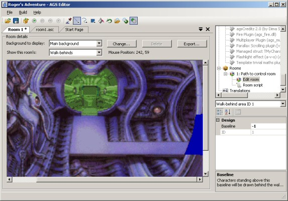
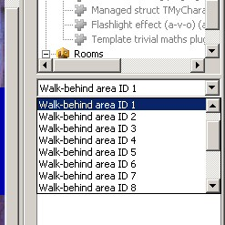

Getting Started with AGS - Part 2
In AGS, games are made up of several rooms, which the player moves between in order to play the game. Each room is one screen that has its own background, hotspots and objects.
Creating your first room
Scroll down to the bottom of the project tree, and you'll see a node called "Rooms". Right-click it, and choose "New room". You'll see a "1:" node appear underneath. This shows us that we've created room number 1, and we can give it a name in a moment.

Expand the "1:" node, and double-click the "Edit room" node underneath to open the room. You'll see a new window open up, with a big black area in it. This is the room background, which is currently blank. The room editor looks like this:

There are four main parts to this window:
- The Background Selection area allows you to import and manage the room's backgrounds.
- The Room Parts drop-down list is the way that you switch between seeing different aspects of the room.
- The Room Background Preview area is where you see the room's background image, along with various things on top of it, depending on what's selected in the Room Parts option.
- The Properties window allows you to set up various properties and events for the room.
Naming the Room
As a first step, let's give the room a description. This is just to help us easily remember which room it is, and this description isn't used at all by the game engine. Click in the "Description" property in the property grid, and type in something appropriate. You'll notice that the project tree updates to include this description.
The Background
Now, the first thing you need to do is draw the background for the room. This needs to be an image of at least the same size as your game resolution (that we set earlier on the General Settings pane); if it's bigger than the game resolution then it'll become a scrolling room.
Draw the image in your favourite paint package, and once done, save it as a BMP or PNG file. Then, return to the AGS Editor, and press the "Change" button. Find the file you just created, and click Open.
You should see the black area in the editor replaced by your image. For this tutorial, I'm going to shamelessly steal a background from Space Quest 4. Obviously, you should draw your own!

Edges
Open up the combobox that says "Nothing" in it, and select "Edges". You'll see four yellow lines drawn across your image in various places. These are the room edges, and they define how far the character needs to walk to be considered to have left the room. Click and drag them to position them appropriately. Bear in mind that it's the character's feet that are compared with these lines when positioning.

At the moment, walking past the edge won't actually cause anything to happen, but we'll deal with that later. In my example, the character can only walk off the top and right edges, so they're the only ones that I've dragged into position. I've left the others as they are, since we won't be needing them.
Walkable Areas
Next, we need to define the room's walkable areas, which define where characters are allowed to walk within the room. Open up the drop-down list again, and select "Walkable areas":

In the toolbar you'll notice that some new buttons have appeared. These are the drawing tools, and work in a similar way to most paint packages. AGS provides Line, Freehand, Rectangle and Fill tools. Alternatively, you can draw your walkable area mask in a paint package and import it (we'll cover that later).
What we need to do is to fill in the areas of the room where the player is allowed to walk. In the game, the bottom middle of the character is checked against these areas, so it's probably wise to make the walkable areas slightly smaller than they need to be, to allow the character's feet to spill outside the area.
The best way to start off is with the Line tool. Draw some lines to encompass the area that you want to be walkable. Make sure they are all joined up, and then choose the Fill tool and click in the middle of the area, and it should be filled blue. If the whole screen goes blue, click Undo, then use the Line tool to make sure all the edges of the area are properly connected up, and try again.
You can use the right mouse button with the drawing tools to erase areas in the same way that you use the left button to add them.

Walk-behind areas
The next job we need to do is to define the walk-behind areas. These areas (called "priorities" by some other adventure game tools) tell the game where the character needs to be drawn behind the background. For example, on my screen here, the player needs to walk in from behind the curved wall on the right.
Choose "Walk-behinds" from the combobox. Your walkable area will disappear and you'll be back to just seeing the room background.
Now, we draw on the walk-behind area in the same way as we did the walkable area - in fact, all the same drawing tools are available. My result looks like this:

Notice that I haven't bothered to make the whole of the pillar a walk-behind from top to bottom - using my knowledge of the walkable areas and the height of the character, I can just draw a walk-behind in the places where it's possible for the character to be.
Now that we've done that, there's a very important next step in order to make the area work - the baseline. The baseline is a horizontal line, which tells the game where the character has to be in order to be drawn behind the area. For example, if you had a table in the middle of the room, you'd only want him drawn behind the table if he was standing behind it.
You normally place a baseline at the lowest point of the walk-behind area. Move the mouse cursor to the bottom of the walk-behind area, and look at the "Mouse Position" display above the room background. These are the X and Y co-ordinates of where the mouse cursor currently is. We're only interested in the Y co-ordinate, so type it in to the Baseline setting in the property grid.
By default, we've been drawing blue areas onto the screen. But what if we had two pillars, in different places? We wouldn't want the same baseline to apply to both. Never fear, AGS allows you to have several different areas on each screen. Above the property grid, there's a combobox that says "Walk-behind area ID 1". You can change this to draw in another colour, and each area has its own baseline.

Trying out the game
Ok, we've slogged away at making our room - now it's about time to give it a go. Press F5, or click "Run" on the Build menu. This will save your work and launch the game! Once loaded, you should see your room with the character in it.

When you use the Run command, the game will always run in a window. If you want to test the game full-screen, use the Ctrl+F5 ("Run without debugger") option.
Try to move the character around. If he won't move, he probably didn't start on a walkable area. If this is the case, expand the "Characters" node in the project tree, and double-click "cEgo". Then, look in the property grid for two properties called "StartX" and "StartY". You can find out what these co-ordinates should be by going back to your room background, positioning the mouse cursor at the place where you want the character to start, and reading the "Mouse co-ordinates" display.
Once you've got that working, have a play walking the character around the screen, testing out the walkable and walk-behind areas.

The normal way of exiting the game is to press Ctrl+Q. It's possible that during development of your game, you may create a script that causes the game to lock up - in this case, the emergency break key Alt+X will exit the game for you.
Go to part 3: Adding interaction